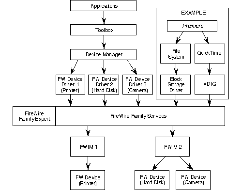

Legacy Document
Important: This document is part of the Legacy section of the ADC Reference Library. This information should not be used for new development.
Current information on this Reference Library topic can be found here:
|
IntroductionFireWire is a cross-platform, high speed serial data bus -- defined by IEEE Standard 1394-1995 -- that can move large amounts of data between computers and peripheral devices. It features simplified cabling, hot swapping and transfer speeds up to 400 megabits per second. Major manufacturers of multimedia devices have already adopted FireWire technology. Invented at Apple, FireWire enables the connection of new digital consumer products - including digital camcorders, digital video tapes, digital video disks, set-top boxes, and music systems - directly to the personal computer. Apple is a co-founder of the 1394 Trade Association and is actively participating in the group's market and technology development activities. Mac OS 9 SupportMac OS 9 includes services and support for FireWire drivers and the applications that control them. This support exists below the Toolbox level, so developers of existing high-level applications will not need to modify their code to take advantage of FireWire I/O. IMPORTANT: The information in this document does not apply to the Classic environment under Mac OS X. Main features of the Mac OS 9 support for FireWire include:
The Mac OS supports these features through a FireWire family expert and a set of FireWire family services. The relation between these system facilities and other software, including device drivers and FireWire interface modules (FWIMs), is diagramed below. The application Premiere\x99, from Adobe, is shown as an example: Figure 1: FireWire services on Mac OS 9  FW Interface ModulesThe FireWire interface module (FWIM) software architecture abstracts the hardware specifics of a FireWire card or logic board implementation into a standard interface. It resembles the SCSI interface module (SIM) architecture described in Inside Macintosh: Devices. The FWIM architecture lets multiple FireWire cards and devices from multiple vendors work together in a single system. A FWIM is a hardware driver that the Mac OS uses to access a FireWire bus. It exports a driver descriptor that the Mac OS uses to match it with a FireWire card. At boot time, the Mac OS scans the Name Registry for devices that have a driver with the service category 'fwim'. It loads the appropriate FWIM and calls the FWIM's initialization routine. It then uses the FWIM interface to scan the bus for FireWire devices and loads their drivers, as described below. In this way, the Mac OS keeps track of which FWIM is associated with each device driver. FW Device DriversFireWire device drivers follow the architecture described in Designing PCI Cards and Drivers for Power Macintosh Computers. Each driver is a Macintosh code fragment that exports a driver description structure. When a FireWire bus reset occurs, the FireWire expert scans the bus for attached devices. It creates a Name Registry entry for each device, containing the device's Spec_Id and Sw_Version values. The expert then loads and installs the appropriate driver for each device by matching these values to the driver's description structure. Once installed, the driver registers itself with the set of FireWire family services supplied by the Mac OS. Some of these services are described below. Asynchronous Request ServicesFireWire family services can be used to send asynchronous requests to nodes on a FireWire bus, including basic read, write, and lock requests. Atomic routines are also provided for logical bit operations, addition, and incrementing. The asynchronous request services use reference IDs, which identify entities on the FireWire bus such as drivers, devices, interface cards, the isochronous resource manager, the bus manager, or the root device. A driver can use its own reference ID to specify the target of an asynchronous request. Using reference IDs reduces the complexity of a FireWire driver by making it unnecessary to deal with node IDs, topology generation numbers, and bus resets. Isochronous ServicesFireWire family services in the Mac OS provide support for the isochronous data streams specified by the IEEE 1394 standard. These services include allocating isochronous channel numbers and bandwidth, as well as setting up and controlling data streams between a remote device and the local node or between multiple remote devices. Isochronous services provide a flexible buffering mechanism to support a wide variety of data formats. They use isochronous channel IDs to construct pathways between devices and identify all the information needed to manage data transfers. Channel IDs also help coordinate the construction and control of isochronous channels between multiple drivers. Configuration ROM ServicesMac OS services are provided for searching and accessing configuration ROMs on local and remote nodes of a FireWire bus, using relatively simple data structures. These services make it unnecessary for the driver to interpret the format of the CSR Configuration ROM directory hierarchy specified by the IEEE 1394 standard. Using configuration ROM entry IDs, drivers can reference specific entries in a CSR Configuration ROM and access their values. Function Control Protocol (FCP) ServicesCertain FireWire family services can be used to send Function Control Protocol (FCP) commands in a way similar to asynchronous requests. These services help drivers interpret and match FCP responses to outstanding FCP commands. Bus Topology ServicesFireWire family services help obtain information about the topology of a FireWire bus. Using them, a driver can access information such as the current bus topology map, a device's node ID, or a device's unique ID. Developer SupportThe FireWire SDK 2.8.1 for Mac OS 9 is available from the ADC Development Kits webpage. The SDK includes documentation, sample code, and tools that developers can use to write Mac OS 9 based applications and device drivers for FireWire devices. Includes GM versions of FireWire 2.8 and 2.8.1, documentation of changes from FireWire 2.7, and updated FireBug and FireCracker tools. Document Revision History
Posted: 2004-09-17 | ||||||||||
|